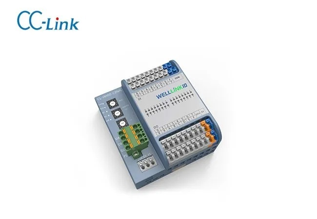
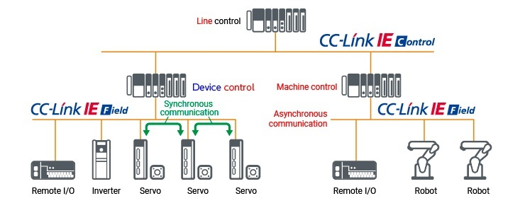

CC-LINK (CONTROL & COMMUNICATION LINK)
ESTRUTURA FÍSICA E CABEAMENTO
CC-LINK EM REDES INDUSTRIAIS
O CC-Link (Control & Communication Link) é uma rede de campo industrial aberta, desenvolvida para a comunicação entre controladores programáveis, módulos de entradas e saídas remotas, inversores de frequência, servoacionamentos, interfaces homem-máquina e outros dispositivos de automação. Sua função é transportar dados de controle e de diagnóstico entre equipamentos distribuídos na máquina ou na linha de produção, reduzindo a quantidade de ligações individuais entre o controlador e cada dispositivo.
Na versão clássica, o CC-Link utiliza uma estrutura de barramento serial baseada em RS-485, com uma estação mestre que coordena a comunicação com as estações conectadas. A rede trabalha principalmente com troca cíclica de dados de entrada e saída, podendo também realizar comunicação transitória para troca de mensagens sob demanda, conforme o tipo de estação e os recursos implementados.
É importante diferenciar o CC-Link clássico das tecnologias posteriores da mesma família. O CC-Link IE Field e o CC-Link IE TSN utilizam infraestrutura Ethernet industrial e possuem características próprias de velocidade, cabeamento e topologia. Neste relatório, os parâmetros de cabeamento serial, RS-485, taxas de até 10 Mbps e distâncias de até 1.200 metros referem-se ao CC-Link clássico; as variantes Ethernet serão identificadas apenas para comparação.

MEIO DE TRANSMISSÃO E CABEAMENTO ADOTADO
CABO DEDICADO CC-LINK
O CC-Link clássico utiliza um cabo dedicado de três condutores em par trançado, com blindagem metálica. A especificação da versão 1.10 indica condutores de aproximadamente 20 AWG, impedância característica nominal de 110 Ω e construção adequada à transmissão diferencial em ambiente industrial. Não se deve substituir esse cabo livremente por um cabo Ethernet UTP comum, pois a impedância, a capacitância, a atenuação e a construção do cabo influenciam diretamente a qualidade do sinal e o comprimento permitido do segmento.
- Par de comunicação DA/DB: conduz os sinais diferenciais de dados entre as estações. A identificação usual do cabo versão 1.10 associa o condutor azul ao terminal DA e o branco ao terminal DB.
- Condutor DG: atua como referência de comunicação entre os equipamentos e é normalmente identificado pela cor amarela no cabo dedicado.
- Blindagem (SLD): envolve os condutores e ajuda a reduzir a influência de interferências eletromagnéticas produzidas por motores, contatores, inversores e cabos de potência próximos.
CONECTORES E TERMINAIS PADRONIZADOS
Diferentemente de redes Ethernet que normalmente utilizam conectores RJ45, o CC-Link clássico costuma ser conectado por bornes de parafuso ou blocos de terminais presentes nos módulos mestres e remotos. A forma física do conector pode variar conforme o fabricante do equipamento, mas os sinais devem respeitar a identificação funcional da rede:
- DA (Data A): terminal de uma das linhas diferenciais de comunicação; no cabo CC-Link versão 1.10, normalmente corresponde ao condutor azul.
- DB (Data B): terminal da outra linha diferencial; normalmente corresponde ao condutor branco.
- DG (Data Ground): referência de comunicação, normalmente ligada ao condutor amarelo.
- SLD (Shield): terminal destinado à conexão da blindagem do cabo. Alguns equipamentos também apresentam um terminal FG (Frame Ground), utilizado para aterramento funcional do equipamento e da instalação.
A identificação dos terminais deve ser conferida no manual do módulo utilizado, pois a disposição física, o tipo de borne e as instruções de aterramento podem variar entre fabricantes e modelos.
TERMINAÇÃO E REGRAS DE INSTALAÇÃO
O barramento deve receber resistores de terminação nas duas extremidades físicas da linha principal. Esses resistores reduzem as reflexões do sinal e ajudam a manter a integridade da comunicação. Para instalações com cabo CC-Link versão 1.10, a especificação de referência utiliza terminação de 110 Ω; outros cabos ou versões podem exigir valores diferentes, por isso a resistência indicada pelo fabricante do cabo e pelo manual do equipamento deve ser respeitada.
- Posicionamento: os resistores devem ser instalados somente nas duas extremidades do barramento principal, e não em todas as estações intermediárias.
- Continuidade do cabo: as ligações devem manter a correspondência DA com DA, DB com DB, DG com DG e a continuidade da blindagem, evitando inversões e derivações improvisadas.
- Derivações: ramificações em T podem ser possíveis em configurações específicas e com limites próprios de velocidade, comprimento e quantidade de dispositivos. Elas não devem ser tratadas como autorização para montar qualquer estrela passiva.
TOPOLOGIAS SUPORTADAS

TOPOLOGIA EM BARRAMENTO LINEAR (BUS)
A topologia característica do CC-Link clássico é o barramento linear. O cabo principal percorre a instalação e as estações são conectadas ao longo da linha, com o mestre em uma das posições previstas pelo projeto. Os resistores de terminação ficam nas duas extremidades do segmento. Essa organização reduz a quantidade de cabeamento e permite conectar vários equipamentos ao mesmo meio físico.
- Vantagem: a comunicação compartilhada simplifica a ligação entre o controlador e os dispositivos distribuídos, diminuindo a necessidade de cabos individuais para cada sinal de entrada e saída.
- Limitação: uma falha ou interrupção no cabo principal pode afetar a comunicação com várias estações. Por isso, a instalação, a terminação e a proteção mecânica do cabo são pontos importantes para a confiabilidade da rede.
DERIVAÇÕES E REPETIDORES
Alguns projetos permitem derivações em T, repetidores elétricos ou repetidores ópticos para adaptar a rede à disposição física da planta ou ampliar o alcance. Esses recursos dependem de componentes próprios e de regras de instalação específicas. A utilização de derivações pode restringir as taxas de transmissão e os comprimentos admitidos, enquanto repetidores dividem a rede em segmentos e exigem dimensionamento conforme o manual do fabricante.
DIFERENÇA EM RELAÇÃO ÀS TOPOLOGIAS CC-LINK IE
As variantes CC-Link IE Field e CC-Link IE TSN oferecem topologias Ethernet como linha, estrela, combinações de linha e estrela e anel, conforme a versão e os equipamentos. Elas utilizam cabos Ethernet industriais, como par trançado blindado de categoria 5e ou superior, conectores RJ45 ou M12 e enlaces com distância típica de até 100 metros entre nós em cobre. Essas opções não devem ser atribuídas ao CC-Link clássico, cuja topologia de referência é o barramento serial.
INTERFACE ELÉTRICA E TRANSMISSÃO DE SINAIS
SINALIZAÇÃO E NÍVEIS ELÉTRICOS
A camada física do CC-Link clássico é compatível com a interface EIA/TIA-485 (RS-485), que utiliza transmissão diferencial por dois condutores de sinal. A informação é representada pela diferença de tensão entre DA e DB, em vez de depender da tensão de um único fio em relação ao terra. Essa característica proporciona maior rejeição a ruídos comuns aos dois condutores, sendo adequada a instalações industriais com interferências eletromagnéticas.
- Transmissão diferencial: o transmissor altera a polaridade do sinal entre as linhas DA e DB para representar os estados digitais. O receptor interpreta a diferença entre as duas linhas, o que melhora a imunidade a ruídos induzidos de forma semelhante nos condutores.
- Codificação NRZI: o CC-Link utiliza Non-Return-to-Zero Inverted (NRZI) na codificação da sequência de bits, conforme a especificação do protocolo.
- Sincronização: a comunicação utiliza sincronização por quadro, permitindo que as estações identifiquem os limites das unidades transmitidas e acompanhem o fluxo de dados.
ALIMENTAÇÃO PELO BARRAMENTO
O CC-Link clássico transporta dados pelo par de comunicação e pela infraestrutura de sinal descrita na especificação, mas não foi concebido como uma rede de alimentação integrada para os dispositivos. Portanto, sensores, módulos remotos, inversores e outros equipamentos normalmente necessitam de alimentação elétrica própria, por fonte CC ou pela alimentação de campo prevista no equipamento.
- Dados e energia: não se deve considerar que o cabo de comunicação CC-Link forneça, por padrão, a energia de operação das estações. O condutor DG é uma referência de comunicação, não uma linha de alimentação para os dispositivos.
- Alimentação local: módulos de E/S remotas e equipamentos de campo utilizam fontes ou circuitos de alimentação dimensionados conforme sua tensão, corrente e requisitos de segurança.
ISOLAÇÃO E PROTEÇÃO CONTRA RUÍDOS
BLINDAGEM E ATERRAMENTO
A blindagem do cabo dedicado ajuda a reduzir o acoplamento de interferências eletromagnéticas provenientes de motores, inversores de frequência, transformadores e circuitos de potência. Ela deve ser conectada aos terminais SLD e/ou FG conforme o diagrama de ligação e as recomendações do fabricante. O aterramento deve fazer parte de um sistema equipotencial adequado, evitando trajetos de corrente indesejados pela blindagem ou diferenças de potencial entre equipamentos.
- Separação física: sempre que possível, os cabos de comunicação devem ser instalados separados dos cabos de potência e dos condutores de saída de inversores. Cruzamentos inevitáveis devem ser planejados, preferencialmente em ângulo próximo de 90 graus.
- Continuidade da blindagem: emendas e conexões devem preservar a blindagem e a integridade mecânica do cabo. A interrupção do shield reduz a proteção contra ruídos.
- Aterramento funcional: a conexão entre SLD, FG e a estrutura de aterramento deve seguir o manual do equipamento e o projeto elétrico da instalação; não se deve aplicar uma regra universal sem verificar a arquitetura de aterramento da máquina.
TERMINAÇÃO, REFLEXÕES E IMUNIDADE
O uso de resistores de terminação compatíveis com a impedância característica do cabo reduz reflexões nas extremidades do barramento. Comprimentos excessivos, derivações não previstas, terminações ausentes ou duplicadas e conexões frouxas podem provocar erros de comunicação. A combinação de par trançado, sinalização diferencial, blindagem e terminação correta contribui para a estabilidade da rede, mas não elimina a necessidade de boas práticas de instalação e compatibilidade eletromagnética.
PROTOCOLO DE ENLACE E ACESSO AO MEIO (MAC)
MÉTODO DE ACESSO AO MEIO
SISTEMA MESTRE E ESTAÇÕES REMOTAS
O CC-Link clássico utiliza um sistema de comunicação do tipo broadcast polling, coordenado por uma estação mestre. O mestre organiza a troca cíclica de dados com as estações da rede, enviando consultas e controlando a sequência de comunicação. As estações remotas respondem de acordo com a posição e as regras definidas pelo protocolo, evitando que vários dispositivos iniciem transmissões independentes ao mesmo tempo.
- Estação mestre: coordena o enlace, administra a atualização dos dados cíclicos e supervisiona o estado de comunicação das estações configuradas.
- Estações remotas: podem ser módulos de E/S remotas, dispositivos inteligentes, acionamentos e outros equipamentos compatíveis. Cada estação possui identificação e área de dados definida na configuração da rede.
- Acesso controlado: como a transmissão é coordenada pelo mestre, o CC-Link não utiliza CSMA/CD nem CSMA/CA para disputar o meio. O mecanismo reduz colisões decorrentes de transmissões simultâneas não coordenadas.
COMUNICAÇÃO CÍCLICA E TRANSITÓRIA
A comunicação cíclica atualiza periodicamente as informações de entradas, saídas e registradores compartilhados entre o mestre e as estações. É utilizada para o controle contínuo da máquina, como leitura de sensores, atualização de estados e envio de comandos. A comunicação transitória permite solicitar ou transferir informações adicionais sob demanda, como parâmetros, diagnósticos ou dados específicos de um equipamento, quando esse recurso é suportado pela estação.
ESTRUTURA DO QUADRO E DA MENSAGEM
A especificação do CC-Link clássico define um formato de transmissão compatível com HDLC, sincronização por quadro e codificação NRZI. A mensagem contém informações de controle e endereçamento necessárias à identificação da estação e da operação, os dados úteis da comunicação e um campo de verificação de erros. A estrutura interna detalhada e os campos específicos dependem da definição do protocolo e do tipo de serviço; por isso, não se deve confundir o quadro CC-Link com um quadro Ethernet ou atribuir a ele endereços IP ou MAC Ethernet.
- Delimitação e sincronização: a transmissão é organizada em quadros, com mecanismos de sincronização que permitem ao receptor reconhecer o início e o fim da unidade transmitida.
- Endereçamento: a identificação das estações e dos dados de enlace permite ao mestre selecionar os dispositivos envolvidos na troca e associar cada informação à área de memória correspondente.
- Payload: transporta dados de entradas e saídas remotas, registradores, comandos e informações adicionais previstas no serviço de comunicação.
ÁREAS DE DADOS E ENDEREÇAMENTO LÓGICO
Na comunicação cíclica, o CC-Link utiliza áreas de dados identificadas por códigos próprios. As principais são:
- RX (Remote Input): informações de entrada remota em unidades de bit, normalmente transferidas das estações de dispositivo para o mestre.
- RY (Remote Output): informações de saída remota em unidades de bit, normalmente enviadas pelo mestre às estações de dispositivo.
- RWr (Remote Register): registradores remotos de leitura em unidades de palavra, utilizados para informações transmitidas da estação remota para o mestre.
- RWw (Remote Register for Writing): registradores remotos de escrita em unidades de palavra, utilizados para informações enviadas do mestre às estações remotas.
A quantidade de pontos disponível depende da versão do CC-Link e da quantidade de estações ocupadas por cada dispositivo. Na versão 1.10, o total máximo informado é de 2.048 pontos RX e 2.048 pontos RY, além de 256 palavras para RWr e 256 palavras para RWw. Na versão 2.00, a capacidade pode chegar a 8.192 pontos para cada área RX e RY e 2.048 palavras para cada área RWr e RWw, com configurações de ciclo estendido.
VERIFICAÇÃO DE ERROS (CRC)
A integridade dos dados é verificada por redundância cíclica (CRC). Para o CC-Link clássico, a especificação indica CRC-16 com polinômio gerador x¹⁶ + x¹² + x⁵ + 1. O transmissor calcula o valor de verificação a partir dos dados protegidos e o inclui na transmissão. O receptor recalcula o CRC e compara o resultado; quando identifica divergência, a unidade é considerada inválida e os mecanismos de diagnóstico e recuperação previstos no equipamento podem atuar.
PARÂMETROS OPERACIONAIS E DESEMPENHO
TAXA DE TRANSMISSÃO (BAUD RATE / BIT RATE)
O CC-Link clássico trabalha com taxas de transmissão selecionáveis conforme a configuração da rede. A especificação contempla cinco valores: 156 kbps, 625 kbps, 2,5 Mbps, 5 Mbps e 10 Mbps. A velocidade escolhida influencia diretamente o comprimento máximo do cabo, o tempo de atualização dos dados e a capacidade de resposta da rede.
- 156 kbps: prioriza maior alcance físico, sendo adequada a instalações extensas que não exigem a maior taxa de transmissão.
- 625 kbps e 2,5 Mbps: oferecem opções intermediárias entre velocidade de comunicação e extensão do barramento.
- 5 Mbps e 10 Mbps: favorecem aplicações que exigem maior velocidade de atualização, com limites de distância mais restritos.
DISTÂNCIA MÁXIMA DO SEGMENTO
A distância máxima depende da taxa de comunicação e da versão do cabo utilizado. Para cabo dedicado CC-Link versão 1.10, com terminação correspondente, a extensão total de referência é:
- 156 kbps: até 1.200 metros de comprimento total.
- 625 kbps: até 900 metros de comprimento total.
- 2,5 Mbps: até 400 metros de comprimento total.
- 5 Mbps: até 160 metros de comprimento total.
- 10 Mbps: até 100 metros de comprimento total, utilizando cabo dedicado CC-Link versão 1.10 e respeitando as condições de instalação especificadas pelo fabricante.
Cabos compatíveis com versões anteriores, como a versão 1.00, podem apresentar limites diferentes de comprimento total e distância entre estações. Assim, os valores da tabela não devem ser aplicados sem verificar a versão do cabo e a documentação dos módulos utilizados.
QUANTIDADE DE ESTAÇÕES E CAPACIDADE DE COMUNICAÇÃO
O CC-Link clássico utiliza numeração de estações de dispositivo de 1 a 64. A quantidade máxima de estações que pode operar simultaneamente depende da versão da rede, do modelo do mestre e do número de estações ocupadas por cada módulo; não se deve presumir que os 64 endereços de dispositivo estejam disponíveis além da estação mestre. Os limites de link points também dependem da configuração.
- Versão 1.10: oferece até 2.048 pontos de entrada remota RX e 2.048 pontos de saída remota RY, além de 256 palavras para cada uma das áreas de registradores RWr e RWw.
- Versão 2.00: amplia a capacidade para até 8.192 pontos RX e RY e até 2.048 palavras RWr e RWw, com opções de ciclo estendido de 1, 2, 4 ou 8 vezes, conforme os dispositivos e a configuração.
DETERMINISMO E TEMPO DE CICLO
Classificação: O CC-Link clássico é projetado para comunicação cíclica determinística.
Justificativa: Como o acesso ao meio é coordenado pela estação mestre por polling, a sequência de atualização dos dados é organizada e previsível.
Aplicação: característica importante para o controle de entradas e saídas em máquinas e linhas de produção.
A CLPA descreve o CC-Link como uma rede com resposta de E/S altamente determinística.
Tempo de ciclo: O link scan time depende da taxa de transmissão, do número de estações e do volume de dados cíclicos. Taxas maiores tendem a reduzir o ciclo, enquanto mais estações ou dados podem ampliá-lo. O valor real deve ser conferido no manual do módulo mestre para a configuração utilizada.
NÍVEL NA PIRÂMIDE DA AUTOMAÇÃO
Classificação: atua principalmente nos níveis de campo e de controle da pirâmide da automação (Níveis 1 e 2).
Justificativa: O CC-Link clássico interliga o controlador programável a módulos de entradas e saídas remotas, sensores e atuadores conectados por módulos de comunicação, inversores de frequência, servoacionamentos e outros dispositivos de campo. Por isso, está diretamente associado à aquisição de sinais e ao envio de comandos no chão de fábrica, além de apoiar a coordenação do controle entre equipamentos. A integração com sistemas de supervisão e gerenciamento ocorre por meio dos controladores e de redes de nível superior, não sendo o foco principal do barramento clássico.
EVOLUÇÃO DA FAMÍLIA CC-LINK
A família CC-Link reúne tecnologias que atendem diferentes níveis de desempenho e integração. O CC-Link clássico utiliza RS-485 e cabo dedicado de três condutores; o CC-Link IE Field utiliza Ethernet industrial com comunicação de 1 Gbps, cabos de par trançado blindados e topologias como linha, estrela e anel; e o CC-Link IE TSN acrescenta recursos de Time-Sensitive Networking (TSN), com sincronização e compartilhamento temporal da rede. Essas variantes permitem integrar controle de campo, motion control e tráfego de informação, mas suas características físicas e operacionais são diferentes das do CC-Link clássico.